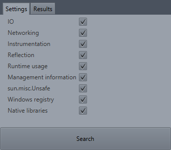
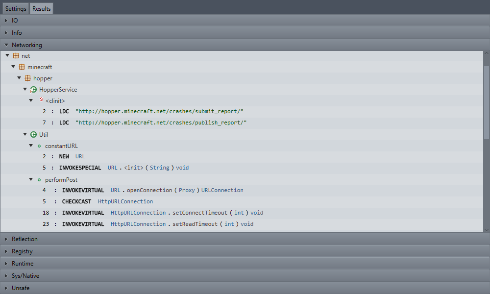

Summary
This is a sample plguin that implements the Stageable interface. It uses the search API to show groups of results that can potentially be used by malicious actors.

Code
import java.lang.reflect.Field; import javafx.scene.Parent; import javafx.scene.control.Button; import javafx.scene.control.Tab; import javafx.scene.control.TabPane; import javafx.scene.layout.BorderPane; import javafx.scene.layout.HBox; import javafx.scene.layout.Priority; import me.coley.mwscan.Scan.ScanOpts; import me.coley.plugin.Plugin; import me.coley.recaf.plugins.Stageable; import me.coley.recaf.ui.component.ActionButton; import me.coley.recaf.ui.component.ReflectivePropertySheet; import me.coley.recaf.util.Lang; import me.coley.recaf.util.Reflect; public class MalwareRefScanner extends Plugin implements Stageable { @Override public Parent content() { // Pane for creating Map<String, Boolean> for scan options on left // + Below: Button for running scan // // Results pane on right // + Error logging instead if no results / exception TabPane tabs = new TabPane(); ScanOpts opts = new ScanOpts(); BorderPane bp = new BorderPane(); Tab tabSettings = new Tab("Settings", bp); Tab tabResults = new Tab("Results", null); tabSettings.setClosable(false); tabResults.setClosable(false); // ReflectivePropertySheet optSheet = new ReflectivePropertySheet(opts) { protected void setupItems(Object instance) { for(Field field : Reflect.fields(instance.getClass())) { // Setup item & add to list getItems().add(new ReflectiveItem(instance, field, "mwscan", field.getName().toLowerCase())); } } }; optSheet.setSearchBoxVisible(false); optSheet.setModeSwitcherVisible(false); Button btnSearch = new ActionButton("Search", () -> { Scan scan = new Scan(); scan.run(); tabResults.setContent(scan.toNode()); tabs.getSelectionModel().select(1); }); HBox hSearch = new HBox(btnSearch); btnSearch.setStyle("-fx-padding: 14px;"); btnSearch.setMaxWidth(Double.MAX_VALUE); HBox.setHgrow(btnSearch, Priority.ALWAYS); bp.setCenter(optSheet); bp.setBottom(hSearch); tabs.getTabs().addAll(tabSettings, tabResults); return tabs; } @Override public String title() { return "Suspicion scanner"; } @Override public int width() { return 1000; } @Override public int height() { return 600; } @Override public void load() { // insert translations Lang.load("mwscan.io.name", "IO"); Lang.load("mwscan.io.desc", "References to file-IO via various IO-related packages."); Lang.load("mwscan.networking.name", "Networking"); Lang.load("mwscan.networking.desc", "References to network connections via net-related packages."); Lang.load("mwscan.instrument.name", "Instrumentation"); Lang.load("mwscan.instrument.desc", "References to instrumentation); rewriting of classes in memory."); Lang.load("mwscan.reflect.name", "Reflection"); Lang.load("mwscan.reflect.desc", "Reflection"); Lang.load("mwscan.runtime.name", "Runtime usage"); Lang.load("mwscan.runtime.desc", "References to the runtime class); namely runtime.exec() function."); Lang.load("mwscan.info.name", "Management information"); Lang.load("mwscan.info.desc", "Reference to the management beans); which provide lots of information about the VM and user's machine."); Lang.load("mwscan.unsafe.name", "sun.misc.Unsafe"); Lang.load("mwscan.unsafe.desc", "References to the Unsafe utility class); which allows memory management like native languages."); Lang.load("mwscan.registry.name", "Windows registry"); Lang.load("mwscan.registry.desc", "References to constants and classes associated with editing the registry of windows devices."); Lang.load("mwscan.sysnative.name", "Native libraries"); Lang.load("mwscan.sysnative.desc", "References to native interface libraries."); } @Override public void unload() {} }
import java.lang.reflect.Field; import java.util.Collections; import java.util.HashMap; import java.util.List; import java.util.Map; import java.util.Map.Entry; import java.util.TreeMap; import javafx.scene.Node; import javafx.scene.control.Accordion; import javafx.scene.control.TitledPane; import me.coley.recaf.bytecode.search.Parameter; import me.coley.recaf.bytecode.search.Result; import me.coley.recaf.bytecode.search.ResultTree; import me.coley.recaf.bytecode.search.Search; import me.coley.recaf.bytecode.search.StringMode; import me.coley.recaf.util.Reflect; public class Scan { // Defaults for active searches private final static boolean DEFAULT_IO = true; private final static boolean DEFAULT_NETWORKING = true; private final static boolean DEFAULT_INSTRUMENT = true; private final static boolean DEFAULT_REFLECT = true; private final static boolean DEFAULT_RUNTIME = true; private final static boolean DEFAULT_INFO = true; private final static boolean DEFAULT_UNSAFE = true; private final static boolean DEFAULT_REGISTRY = true; private final static boolean DEFAULT_SYS_NATIVE = true; // Given option map private final Map<String, Boolean> optionStates; private final Map<String, List<Result>> optionToResults = new TreeMap<>(); // Result lists private List<Result> io; private List<Result> networking; private List<Result> instrument; private List<Result> reflect; private List<Result> runtime; private List<Result> info; private List<Result> unsafe; private List<Result> registry; private List<Result> sysNative; /** * Scan with default options. */ public Scan() { this(Collections.emptyMap()); } /** * Scan with defined options. * * @param options * Map of option enabled states. */ public Scan(Map<String, Boolean> options) { this.optionStates = options; } /** * @return JavaFX control model of results. */ public Node toNode() { Accordion accordion = new Accordion(); for (Entry<String, List<Result>> e : optionToResults.entrySet()) { List<Result> res = e.getValue(); if (res == null || res.size() == 0) { continue; } ResultTree tree = new ResultTree(); tree.setSearchResults(res); TitledPane tp = new TitledPane(e.getKey(), tree); accordion.getPanes().add(tp); } return accordion; } /** * Run the scan operation. */ public void run() { Parameter pWeb = Parameter.string("(www|http:|https:|ftp:)+[^\\s]+[\\w]"); pWeb.setStringMode(StringMode.REGEX); //@formatter:off if (optionStates.getOrDefault("io", DEFAULT_IO)) io = Search.search( Parameter.references("java/io", null, null), Parameter.references("java/nio", null, null), Parameter.references("java/lang/Class", "getResource", null), Parameter.references("java/lang/ClassLoader", "getResource", null), Parameter.references("java/lang/ClassLoader", "getSystemResource", null), Parameter.references("java/util/jar/", null, null), Parameter.references("java/util/zip/", null, null), Parameter.references("javax/imageio/ImageIO", null, null), Parameter.references("sun/nio", null, null)); if (optionStates.getOrDefault("networking", DEFAULT_NETWORKING)) networking = Search.search( Parameter.references("java/net", null, null), Parameter.references("java/rmi", null, null), Parameter.references("javax/net", null, null), Parameter.references("javax/rmi", null, null), Parameter.references("com/sun/corba/se", null, null), Parameter.references("sun/net", null, null), pWeb); if (optionStates.getOrDefault("instrument", DEFAULT_INSTRUMENT)) instrument = Search.search( Parameter.references("java/lang/instrument", null, null), Parameter.references("sun/instrument", null, null), Parameter.references("sun/tools/attach", null, null)); if (optionStates.getOrDefault("reflect", DEFAULT_REFLECT)) reflect = Search.search( Parameter.references("java/lang/Class", "forName", null), // load from name Parameter.references("java/lang/Class", "getDec", null), // declared items Parameter.references("java/lang/Class", "getCon", null), // constructors Parameter.references("java/lang/Class", "getClass", null), // getClass + getClasses + getClassLoader Parameter.references("java/lang/Class", "getEnc", null), // enclosing / enclosed Parameter.references("java/lang/Class", "getAnno", null), // annotations Parameter.references("java/lang/Class", "getF", null), // fields Parameter.references("java/lang/Class", "getM", null), // methods //Parameter.references("java/lang/Class", "getGen", null), // generic parents (interfaces / super) //Parameter.references("java/lang/Class", "getInterfaces", null), // interfaces //Parameter.references("java/lang/Class", "isAnno", null), // annotation detection Parameter.references("java/lang/Class", "newInstance", null), // dynamic instance from class Parameter.references("java/lang/reflect", null, null), Parameter.references("java/lang/invoke", null, null), Parameter.references("sun/reflect", null, null)); if (optionStates.getOrDefault("runtime", DEFAULT_RUNTIME)) runtime = Search.search( Parameter.references("java/lang/Runtime", null, null), Parameter.references("java/lang/Process", null, null)); // Process + ProcessHandle + ProcessBuilder if (optionStates.getOrDefault("info", DEFAULT_INFO)) info = Search.search( Parameter.references("java/lang/management", null, null), Parameter.references("javax/management", null, null) ); if (optionStates.getOrDefault("unsafe", DEFAULT_UNSAFE)) unsafe = Search.search(Parameter.references("sun/misc/Unsafe", null, null)); if (optionStates.getOrDefault("registry", DEFAULT_REGISTRY)) registry = Search.search( Parameter.references("java/util/prefs/Preferences", null, null), Parameter.references("com/registry", null, null), // -2147483648 Parameter.value(0x80000000), // HKCR_VALUE == -2147483648 Parameter.value(0x80000001), // HKCU_VALUE == -2147483647 Parameter.value(0x80000002), // HKLM_VALUE == -2147483646 Parameter.value(0x80000003), // HKU_VALUE == -2147483645 Parameter.value(0x80000005), // HKCC_VALUE == -2147483643 Parameter.value(0x403000), // SE_BACKUP_NAME == 4206592 Parameter.value(0x403016), // SE_RESTORE_NAME == 4206614 Parameter.value(0x20019), // KEY_READ / KEY_EXECUTE == 131097 Parameter.value(0x20006), // KEY_WRITE == 131078 Parameter.value(0xF003F), // SC_MANAGER_ALL_ACCESS == 983103 Parameter.value(0xF01FF) // SERVICE_ALL_ACCESS == 983551 ); if (optionStates.getOrDefault("sysNative", DEFAULT_SYS_NATIVE)) sysNative = Search.search( Parameter.references("com/sun/jna", null, null), Parameter.references("java/lang/System", "load", null), Parameter.references("java/lang/System", "mapLibraryName", null), Parameter.references("org/jnativehook", null, null), Parameter.references("java/awt/Toolkit", "getSystemClipboard", "()Ljava/awt/datatransfer/Clipboard;"), Parameter.references("java/awt/datatransfer/Clipboard", null, null)); //@formatter:on optionToResults.put("IO", io); optionToResults.put("Networking", networking); optionToResults.put("Instrumentation", instrument); optionToResults.put("Reflection", reflect); optionToResults.put("Runtime", runtime); optionToResults.put("Info", info); optionToResults.put("Unsafe", unsafe); optionToResults.put("Registry", registry); optionToResults.put("Sys/Native", sysNative); } //@formatter:off public List<Result> getIO() { return io; } public List<Result> getNetworking() { return networking; } public List<Result> getInstrument() { return instrument; } public List<Result> getReflect() { return reflect; } public List<Result> getRuntime() { return runtime; } public List<Result> getInfo() { return info; } public List<Result> getUnsafe() { return unsafe; } public List<Result> getRegistry() { return registry; } public List<Result> getSysNative() { return sysNative; } //@formatter:on /** * Options wrapper to be used in auto-generated UI. * * @author Matt */ public static class ScanOpts { public boolean io = DEFAULT_IO; public boolean networking = DEFAULT_NETWORKING; public boolean instrument = DEFAULT_INSTRUMENT; public boolean reflect = DEFAULT_REFLECT; public boolean runtime = DEFAULT_RUNTIME; public boolean info = DEFAULT_INFO; public boolean unsafe = DEFAULT_UNSAFE; public boolean registry = DEFAULT_REGISTRY; public boolean sysNative = DEFAULT_SYS_NATIVE; public Map<String, Boolean> toMap() { Map<String, Boolean> options = new HashMap<>(); for (Field field : Reflect.fields(ScanOpts.class)) { boolean val = true; try { val = field.getBoolean(this); } catch (Exception e) {} options.put(field.getName(), val); } return options; } } }